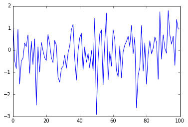
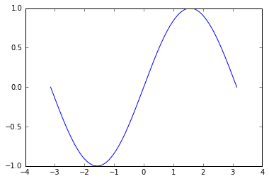
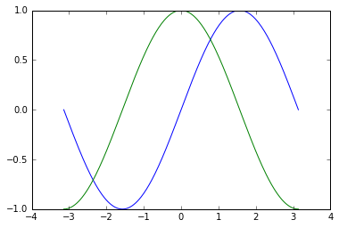
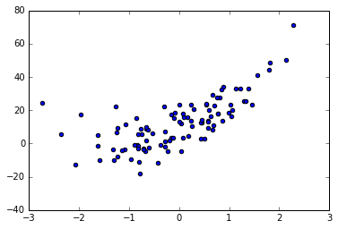
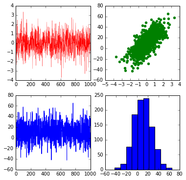
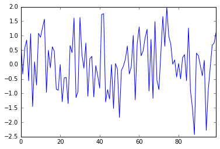
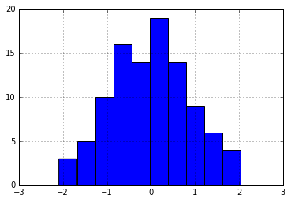
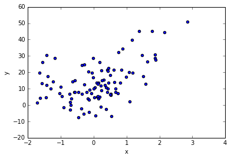
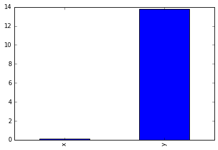

[1]:
import matplotlib.pyplot as plt
%pylab inline
Populating the interactive namespace from numpy and matplotlib
[2]:
import numpy as np
x = np.random.randn(100)
print x[:10]
plt.plot(x)
[ 1.34452333 -0.46469014 -0.83757693 0.92933593 -1.5302641 -0.4997725
-0.36458722 0.31578512 0.15491745 0.68290005]
[2]:
[<matplotlib.lines.Line2D at 0x784bc18>]

[3]:
x = np.linspace(-np.pi, np.pi, 256, endpoint=True)
y = np.sin(x)
plt.plot(x, y)
[3]:
[<matplotlib.lines.Line2D at 0x7aaf2b0>]

[4]:
x = np.linspace(-np.pi, np.pi, 256, endpoint=True)
y1 = np.sin(x)
y2= np.cos(x)
plt.plot(x, y1)
plt.plot(x, y2)
[4]:
[<matplotlib.lines.Line2D at 0x7a67320>]

[5]:
# Plotting a standard normal distribution.
[6]:
x = np.random.randn(100)
# y = a + bx + error
y = 10 + 12 * x + 4 * x ** 2 + np.random.normal(0, 10, 100)
print "x: "
print x[:10]
print "y: "
print y[:10]
plt.scatter(x, y)
x:
[-0.14873611 1.28753583 -1.30545456 1.57289873 -0.23636956 0.03364924
1.05200069 -0.71840742 -1.25643378 1.23196504]
y:
[ 3.26841616 25.74039336 -9.82619665 41.24298351 -4.75919327
11.85509123 16.39215086 -2.78431809 6.43710271 32.9615928 ]
[6]:
<matplotlib.collections.PathCollection at 0x7ec40b8>

[8]:
x = np.random.randn(1000)
plt.figure(figsize = (6, 6), dpi = 120)
plt.subplot(221) # <- Make a 2 X 2 grid and plot the graph at 1.
plt.plot(x, color = 'red', linewidth = 0.3, linestyle= '-')
plt.subplot(222)
y = 10 + 12 * x + np.random.normal(0, 12, 1000)
plt.scatter(x, y, color = 'green')
plt.subplot(223)
plt.plot(y)
plt.subplot(224)
plt.hist(y)
[8]:
(array([ 6., 20., 77., 185., 234., 240., 144., 68., 20., 6.]),
array([-42.0657098 , -31.34101776, -20.61632572, -9.89163369,
0.83305835, 11.55775039, 22.28244242, 33.00713446,
43.7318265 , 54.45651853, 65.18121057]),
<a list of 10 Patch objects>)

Plotting in pandas
[10]:
import pandas as pd
import numpy as np
[22]:
pandas_series = pd.Series(np.random.randn(100))
pandas_series.plot()
[22]:
<matplotlib.axes._subplots.AxesSubplot at 0xce4e7b8>

[20]:
pandas_series.hist()
[20]:
<matplotlib.axes._subplots.AxesSubplot at 0xb75eba8>

Plootting with dataframes
[42]:
x = np.random.randn(100)
y = 10 + 5 * x + 4 * x ** 2 + np.random.normal(scale = 10, size = 100)
dataframe = pd.DataFrame({'x': x ,
'y':y })
print dataframe.head()
x y
0 -0.564813 15.071337
1 -1.044352 6.998954
2 -1.718087 1.258806
3 -1.312650 9.977472
4 0.527962 6.681372
[43]:
dataframe.plot('x', 'y', kind = 'scatter')
[43]:
<matplotlib.axes._subplots.AxesSubplot at 0xe2c7828>

[45]:
# Alternatively!
dataframe.plot.scatter('x', 'y')
[45]:
<matplotlib.axes._subplots.AxesSubplot at 0xe2bd2b0>

Plotting with aggregated data
[48]:
dataframe.apply(lambda x: np.mean(x), axis = 0).plot.bar()
[48]:
<matplotlib.axes._subplots.AxesSubplot at 0xec2f438>
